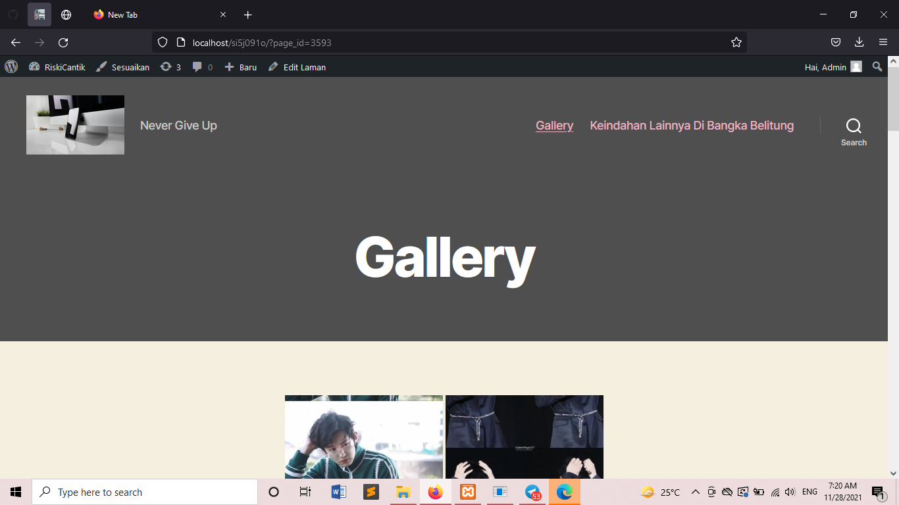

NIM: 1922500091
Nama: Riski Tassyah Audifa
Kelompok: SI5J
Hasil atau kesimpulan dari pertemuan adalah:
- Tahap pertama , buka xampp control panel dan jalankan apache serta mysql
- Tahap kedua , pada browser buka alamat http://localhosat/si5j2122o/ dan tab baru buka alamat http://localhosat/si5j2122o/wp-admin
- Tahap ketiga , pada halaman login silahkan isi username : admin dan password : admin
- materi pertemuan ke 6 merupakan materi uts
- Pada pertemuan ke 6 ini diajarkan tentang Instal Plugin pada Wordpress , instal pugin sendiri sama halnya dengan instal tema seperti pada pertemuan 5 yaitu dengan 3 cara :
1.Online
2.Semi Online
3.Offline
Plugin yang diajarkan pada pertemuan 6 ini adalah menambahkan gallery pada menu utama sehingga dapat lebih menarik.Cara yang dilakukan dengan medownload NextGen Gallery 3.17 dan Foo Galerry 2.1.18 kemudian
diletakan pada folder wp-content kemuadian plugin . setelah terdownload ekstrak here dan aktifkan pada plugin Wordpress kita
- Pada pertemuan ke 6 ini juga diajarkan sedikit materi mengenai UTS agar kami dapat mengerti pada saat UTS nanti
berikut tampilan konten yang telah diposting:
